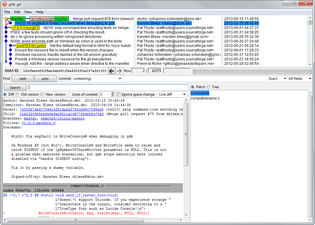
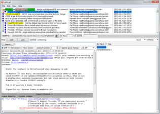

Tools & Features
Git for Windows focuses on offering a lightweight, native set of tools that bring the full feature set of the Git SCM to Windows while providing appropriate user interfaces for experienced Git users and novices alike.
Git BASH
Git for Windows provides a BASH emulation used to run Git from the command line. *NIX users should feel right at home, as the BASH emulation behaves just like the "git" command in LINUX and UNIX environments.
Git GUI
As Windows users commonly expect graphical user interfaces, Git for Windows also provides the Git GUI, a powerful alternative to Git BASH, offering a graphical version of just about every Git command line function, as well as comprehensive visual diff tools.
Shell Integration
Simply right-click on a folder in Windows Explorer to access the BASH or GUI.
 

Contribute
As an open source project, Git for Windows benefits greatly from both the volunteer work of helpful developers and good bug reports made by Git for Windows' users.
Governance Model
If you are interested in contributing to the Git for Windows project, have a look at the current governance model . There the roles of those involved in driving this project further down the road are described in detail.
Bug Reports & Feature Requests
If you've noticed a bug or simply have an idea that you'd like to see become real, why not work on it? Bug reports and feature requests are typically submitted to the issue tracker on our GitHub repository.
Git for Windows SDK : Contributing Code
The Git for Windows SDK is a build environment that includes all the tools necessary for developers who want to contribute by writing code for Git for Windows. Please look at the technical overview of the Git for Windows packaging and how to include your changes in your own custom installer.
To contribute/update this web page, see its Repository